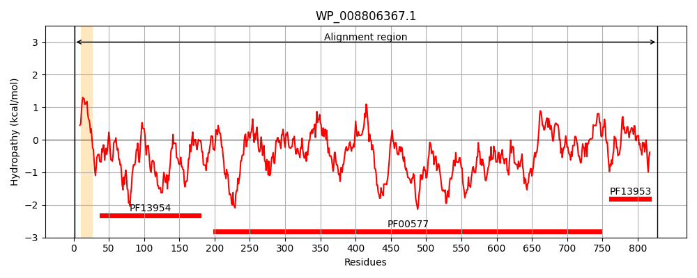
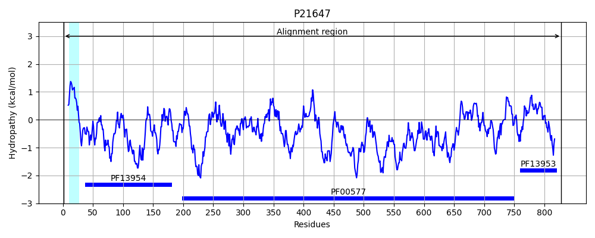
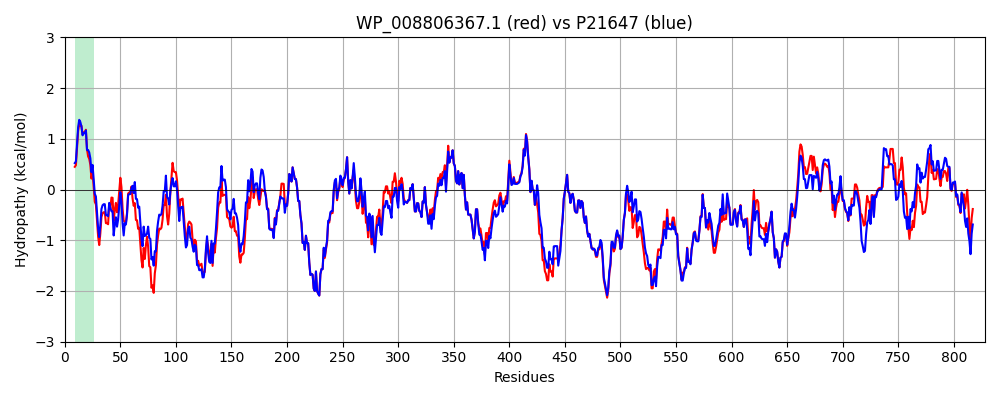

Hit Accession: P21647
Hit TCID: 1.B.11.3.2
Hit Description: gnl|BL_ORD_ID|9371 gnl|TC-DB|P21647|1.B.11.3.2 Outer membrane usher protein mrkC - Klebsiella pneumoniae.
Mach Len: 828
e:0.000000
Query TMS Count : 1
Hit TMS Count: 1
TMS-Overlap Score: 0.900000
Predicted Substrates:None
BLAST Alignment:
Score: 3937 , Bit scores: 1521 bits, E-value: 0.0e+00, Alignment length: 828, Percentage identity: 88
Query: 1 MKQRSFCPGRLSTAIAIALCCFPPFSSGQENPGTVYQFNDGFIVGSREKVDLSRFSTSAITEGTYSLDVYTNDEWKGRYDLRIARDKDGNLGVCYTKAMLTQYGIAAEKLNPKLSEQEGYCGSLKSWRNEENVKDNLVQSSLRLNISVPQIYEDQRLKNYVSPEFWDKGITALNLGWMANAWNSHTSSVGGSDNSSAYLGVNAGLSWDGWLLKHIGNLNWQQQQGKAHWNSNQTYLQRPIPQLNSIVSGGQIFTNGEFFDTIGLRGVNLSTDDNMFPDGMRSYAPEIRGVAQSNALVTVRQGSNIIYQTTVPPGPFTLQDVYPSGYGSDLEVSVKEADGSVEVFSVPYASVAQLLRPGMTRYALSAGKVDDSSLRNKPMLYQATWQHGINNLLTGYTGVTGFDDYQAFLVGTGMNTGIGALSFDVTHSRLKSDTHDDSGQSYRATFNRMFTDTQTSIVLAAYRYSTKGYYNLNDALYAVDQEKNSRSNYTLWRQKNGMTFTVNQNLPDGWGGFYLSGRVSDYWNRSGTEKQYQVSYNNSFGRLSWSASAQRVYTPDSSGHRRDDRISLNFSYPLWFGDNRTANLTSNTSFNNSRFASSQIGINGSLDSENNLNYGVSTTTATGGQHDVALNGSYRTPWTTLNGSYSQGEGYRQSGLGASGTMIAHSGGVVLSPESGSTMALIEAKDAAGAMLPGSPGTRVDSNGYAILPYLRPYRINAVEIDPKGSLDDVAFDRTVAQVVPWEGSVVKVAFGTTVQNNLTLQVRQANHEPLPFAASIFSPDGKEIGVVGQGSMMFISDANAKRAIVKWSGGQCSVDLGPQTTKDSVCR 828
MKQRS CPGRLSTAIA+ALCCFPPFSSGQE+PGT+YQFNDGFIVGSREKVD SRFSTSAI+EG YSLDVYTN EWKGRYDL+I KDG +GVCYTKAML QYGI+ EKLNP+LSE+EG+CG L+ WR+E+NVKD L+QSSLRL+I+VPQIYEDQRLKN+VSP+FWDKG+ ALNLGWMANAWNSH SS GSDNSSAYLGVNAGLSWDGWLLKHIGNLNWQQQQGKAHWNSNQTYLQRPIPQ+NSIVSGGQIFTNGEFFDTIGLRGVNL+TDDNMFPDGMRSYAPEIR VAQSNAL TVRQGSNIIYQTTVPPGPFTLQDVYPSGYGSDLEVSVKE DGSVEVFSVPYASVAQLLRPGMTRYALSAGKVDDSSLRNKPMLYQ TWQHG+NNL TGYTGVTGFDDYQAFL+GTGMNTGIGALSFDVTH+RLKSDT D+ GQSYRATFNRMFT+TQTSIVLAAYRYSTKGYYNLNDALYAVDQEKN SNYT+WRQKNGMTFTVNQNLPDGWGGFYL GRV+DYWNRSGTEKQYQ SYNN +GRLSWS AQRVYTPDSSGHRRDDR+SLNFSYPLWFG+NRTANLTSNT+FNNSRFASSQIG+NGSLDSENNLNYGVSTTTATG QHDVALNGSYRTPWTTLNGSYSQGEGYRQSG+GASGT+IAH GVV SPE+G TMALIEAKDAAG MLPGSPGTR+DSNGYAILPYLRPYRIN+VEIDPKGS DDVAF TVAQVVPWEGSVVKV+F TT+QNN+TL+ RQAN PLPFAA+IF P GKEIGVVGQGSMMFISDA+A +A VKWSGGQCSV+L + TK+++CR
Sbjct: 1 MKQRSICPGRLSTAIAVALCCFPPFSSGQESPGTIYQFNDGFIVGSREKVDPSRFSTSAISEGVYSLDVYTNGEWKGRYDLKITAGKDGKMGVCYTKAMLMQYGISPEKLNPQLSEKEGFCGRLQEWRHEDNVKDTLIQSSLRLDIAVPQIYEDQRLKNFVSPQFWDKGVAALNLGWMANAWNSHISSANGSDNSSAYLGVNAGLSWDGWLLKHIGNLNWQQQQGKAHWNSNQTYLQRPIPQINSIVSGGQIFTNGEFFDTIGLRGVNLATDDNMFPDGMRSYAPEIRDVAQSNALATVRQGSNIIYQTTVPPGPFTLQDVYPSGYGSDLEVSVKEGDGSVEVFSVPYASVAQLLRPGMTRYALSAGKVDDSSLRNKPMLYQGTWQHGLNNLFTGYTGVTGFDDYQAFLLGTGMNTGIGALSFDVTHTRLKSDTLDEHGQSYRATFNRMFTETQTSIVLAAYRYSTKGYYNLNDALYAVDQEKNYNSNYTVWRQKNGMTFTVNQNLPDGWGGFYLCGRVADYWNRSGTEKQYQFSYNNMYGRLSWSVDAQRVYTPDSSGHRRDDRVSLNFSYPLWFGENRTANLTSNTAFNNSRFASSQIGVNGSLDSENNLNYGVSTTTATGRQHDVALNGSYRTPWTTLNGSYSQGEGYRQSGVGASGTLIAHQHGVVFSPETGPTMALIEAKDAAGVMLPGSPGTRIDSNGYAILPYLRPYRINSVEIDPKGSNDDVAFGSTVAQVVPWEGSVVKVSFDTTLQNNITLRARQANGLPLPFAATIFGPSGKEIGVVGQGSMMFISDASAPKATVKWSGGQCSVELSQEKTKETLCR 828 | Protein Hydropathy Plots: |
|---|
|  |  |
Pairwise Alignment-Hydropathy Plot:
|
|---|
|  |